The dashboard
A guided tour of the local, offline-first dashboard: the fleet overview, per-repo anatomy, the architecture graph, blast radius, and generating a wiki.

The dashboard is the human window into everything contextlake builds: a local, offline-first single-page app over your knowledge store. No accounts, no cloud, no build step, one command and it opens in your browser. Read-only by default; see §11 for the opt-in write actions and §12 to ask it questions directly.
New here? Skim QUICKSTART first. For what the graph/wiki/search tiers actually do, see knowledge-layer.md.
flowchart LR
G[("the code graph")] --> A(["Fleet, Repo, Diagrams,
Architecture, Blast radius, Path"])
W[("the generated wiki")] --> B(["a repo's page, and its Wiki tab"])
G --> C(["Chat: a free graph router,
with opt-in LLM prose"])
P["this machine and this process,
not the graph"] --> D(["MCP console, Settings"])
Every read-only view here is a window onto a tier that index, connect or wiki already built, so
nothing on this page runs an extraction pass of its own. MCP console and Settings are the odd pair
out: they report on this machine and this process, not on your code.
1. Get some data in (or don't)#
The dashboard reads your indexed store. If you've already run contextlake kb index (or
contextlake bootstrap), you're set. Just want to look around first? Every screen
below works against a bundled, generic demo fleet, no setup, no real data:
contextlake kb dashboard --serve --sample # a fictional "acme" fleet, served live
A static build of this same
--sampleexport is also hosted as a public, read-only live demo on the project site (linked from the homepage and docs footer). It's regenerated bysite/deploy.shwithcontextlake kb dashboard --site site/demo --sample, the exact command above with--sitein place of--serve, no separate script.
To build against your own repos, index a workspace once:
contextlake kb index --workspace ~/work # or `contextlake bootstrap` for the full pipeline
2. Launch it#
contextlake kb dashboard --serve --open # live, against your store; opens your browser
| Flag | What it does |
|---|---|
--serve |
Run it live against your store (everything on demand, no caps). |
--site DIR |
Export a static file://-safe copy (a representative slice). |
--repos PATTERN |
--site only: include just the repos whose id matches a comma-separated glob/substring pattern. |
--sample |
Build from the bundled demo fleet, guaranteed generic, safe to share. |
--anonymize |
Hash author identities, drop external URLs and README/wiki prose. Works on both --site and --serve. |
--open |
Open the result in your browser. |
--group-depth N |
How many namespace path segments deep to group repos in the fleet overview (default 1). Raise it to split one big flat group into finer sub-groups. |
--allow-mutations |
--serve only: also expose sync/add-repo/MCP-server actions (see §11). Loopback host only; refused with --sample. |
--workspace DIR |
--allow-mutations: where Add repo clones new repos (default: alongside the store). |
--llm-chat |
--serve only: the Chat tab's free graph-router answers work regardless; this additionally sends them to the configured [llm] provider for prose (see §12). Real time/token cost per question. Loopback host only. |
--host HOST |
--serve only: bind address (default 127.0.0.1). See §11 for what a non-loopback host costs you. |
--port PORT |
--serve only: bind port (default 8765), so the default URL is http://127.0.0.1:8765. |
Browsing your whole fleet? Use
--serve, it renders each repo on demand with no caps. A--siteexport is a fixed, shareable slice.
Warning
Before you share a --site export: a real-store export inlines repo names,
git-author identities, and connector URLs, so it prints a "do not publish unscrubbed"
warning. For anything you intend to share, build it with --anonymize (hashes author
identities, drops external URLs + README/wiki prose) or --sample (the bundled,
guaranteed-generic demo fleet).
Making it the default on this machine#
--anonymize covers one invocation. To make it the standing answer, set it once:
# ~/.contextlake/kb.toml
[kb]
anonymize = "always" # or "never", the default
"always" hides identities on the served dashboard and in every --site export without
anyone having to remember the flag. It is an explicit setting rather than something
contextlake infers: nothing in the index records who owns a repository, so any guess it
made would be wrong for somebody, and wrong in the direction of showing a name.
Two deliberate asymmetries:
- The flag can only raise it. There is no
--no-anonymize. Somebody who set"always"cannot lose it to a half-remembered flag in a shell they are screen-sharing; showing identities again means editing the file. - An unreadable value anonymises anyway.
anonymize = "alway"is a typo, and it resolves to"always"with a warning naming the spelling, not to the"never"default.
A .contextlake.kb.toml found by walking up from the current directory may turn this
on but never off. See Configuration for why.
3. The fleet overview#
Stat cards, a knowledge-confidence bar, and your repos grouped by namespace.
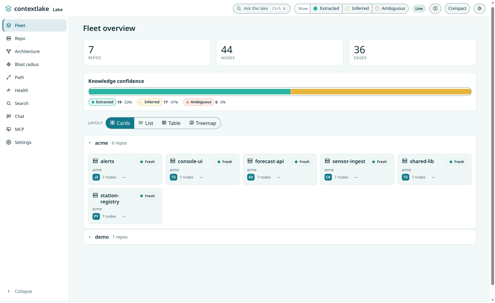
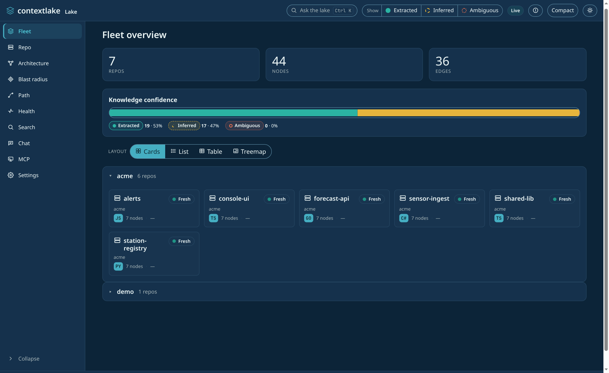
Prefer denser views? Switch the layout, Cards / List / Table / Treemap (your choice is remembered):
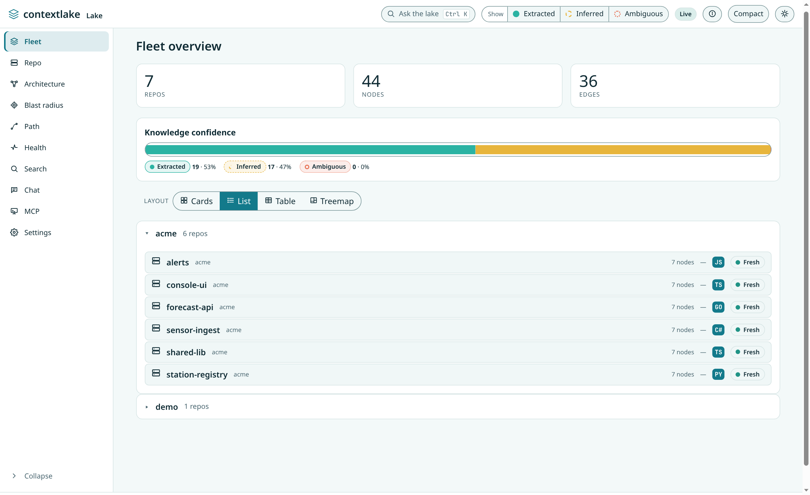
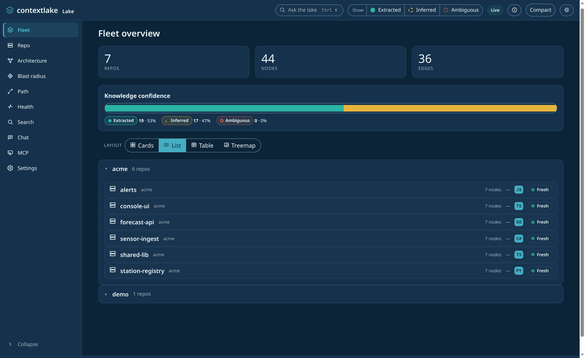

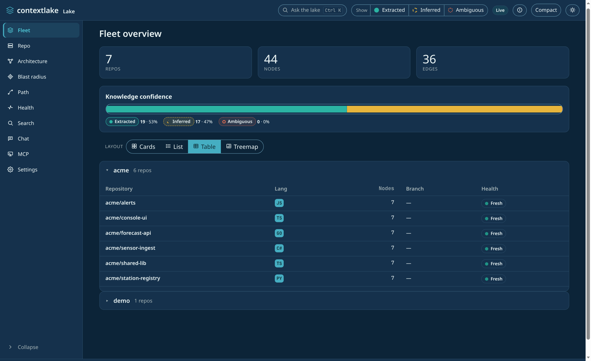
Not sure what a control means? The ⓘ "What am I looking at?" button explains nodes, edges, the three confidence levels, and the Live vs. Static data source:
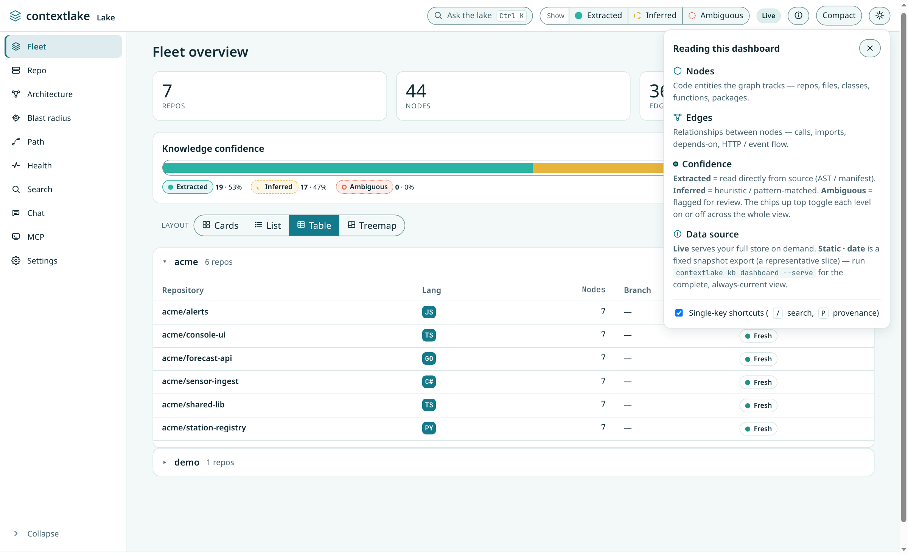
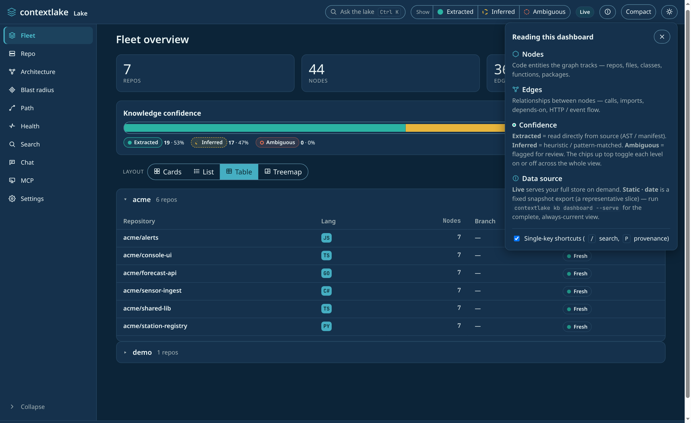
4. A repo up close#
Click any repo for its anatomy (node kinds and top symbols) plus README, curated wiki, owners (ranked from git history), and connector links. Every symbol has a one-click Blast radius, and every fact carries its provenance.
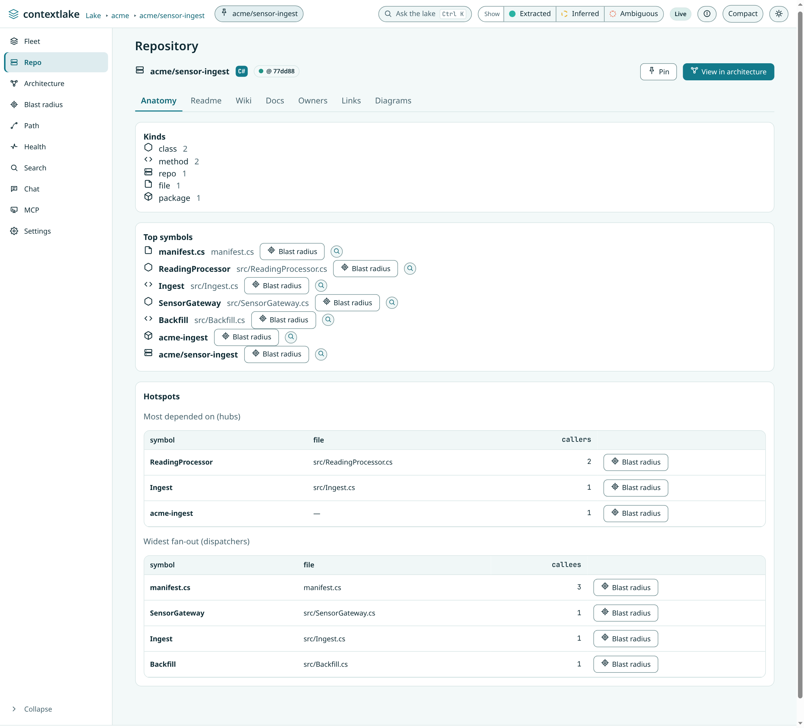
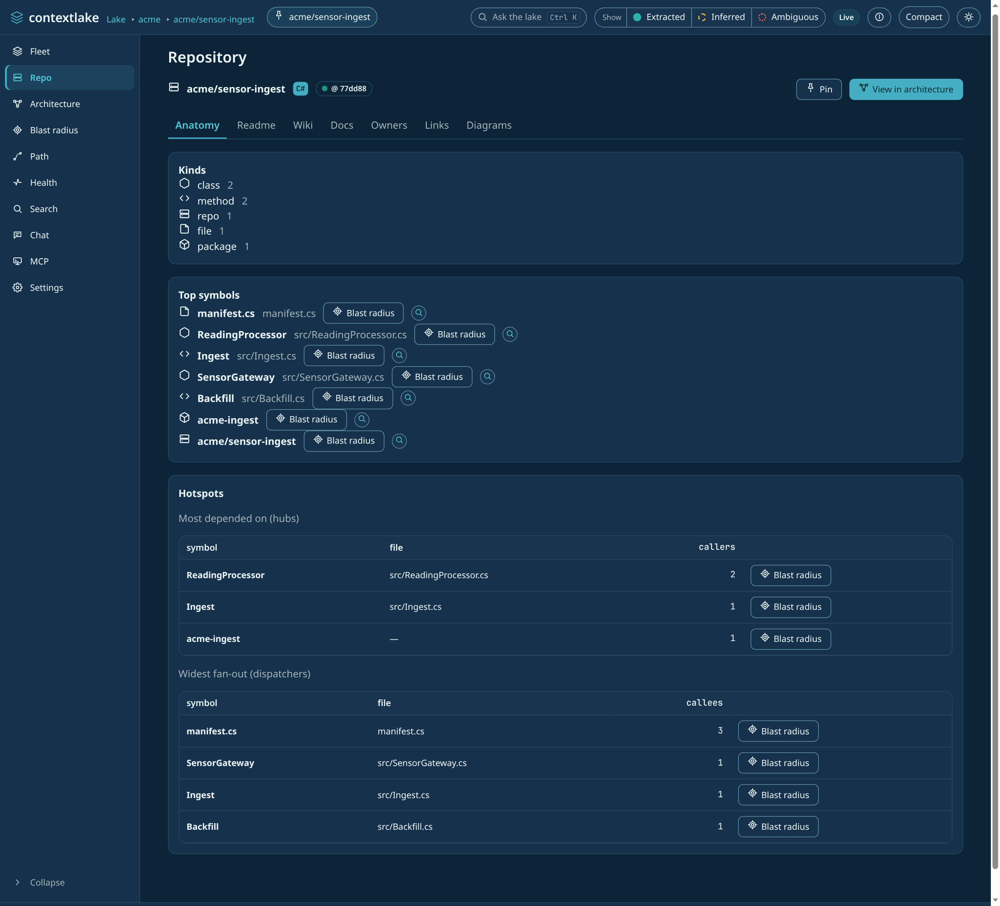
Below Top symbols, a Hotspots section ranks the same call-graph degree data two other ways: hubs (most depended-on, worth protecting with tests) and dispatchers (widest fan-out, where behavior branches). Nothing new is extracted; it's the same index-time centrality data, split by direction instead of combined.
5. Diagrams#
A repo's Diagrams tab renders the same Mermaid text contextlake kb graph --repo <id>
--format <fmt> produces, inline as SVG: Relations (the generic relation graph,
always available), Classes (classes/interfaces/structs/enums and their methods),
States (an entity's guarded state-machine transitions), Data model (SQL table/
view definitions and their foreign keys), and Deployment (Terraform/HCL resources
grouped by inferred category: network/compute/storage/database/security/other/module, other being
the fall-through for a resource type no keyword list claims).
A sixth format, Sequence (--format sequencediagram), needs a single symbol as its
seed rather than a whole repo, so it isn't offered here, it's on the symbol page's
Call sequence card instead (§7).
No new extraction happens. Each tab renders data index already collected.
A format is enabled only when the repo actually has the relevant node kind. Classes stays disabled for a repo with no classes, for instance. That comes from the same anatomy census the repo page's Kinds card shows, not a separate check.
The raw Mermaid source sits below the rendered diagram with a one-click copy, ready to paste into a PR or a design doc.
A repo too large to draw in one slice auto-narrows to its largest module instead of
showing a truncated whole-repo tangle, and if that module is itself still too large,
it keeps narrowing into that module's own largest child, one level at a time, until the
view fits (or there's genuinely nowhere further to go). A breadcrumb trail (Whole repo
› src › sensors › tests) shows the path taken; click any earlier crumb to widen back
out, or pick a different child from the narrow-further control to explore a sibling.
Live-only (not part of a --site export, same as MCP console/Settings below), Mermaid
itself is lazy-loaded into the page only the first time this tab is opened.
6. Architecture & relationships#
The cross-repo dependency graph, a namespace mindmap and a dependency flow, one interactive graph, alongside dependency / HTTP-flow / event-flow tables, each with confidence and provenance (never shown as ground truth).
A repo page's tables add a fourth tab, Data flow: which files read or write which SQL tables and views inside that one repo.
It differs from the other three. Those are repo-to-repo edges, joining on a node shared across repos: a package, an endpoint, a topic.
A table or view definition is only ever known inside the repo that defines it. So a file's read or write can only resolve within its own repo, and Data flow is always scoped to the repo you are looking at. Never cross-repo.
Data flow is also live-only. It is a separate fetch with its own row shape, and a --site export
has no snapshot for it, so the tab is still there and reads "Data flow (unavailable)" rather than
"(0)": nothing is missing from your graph, it just is not in the export.
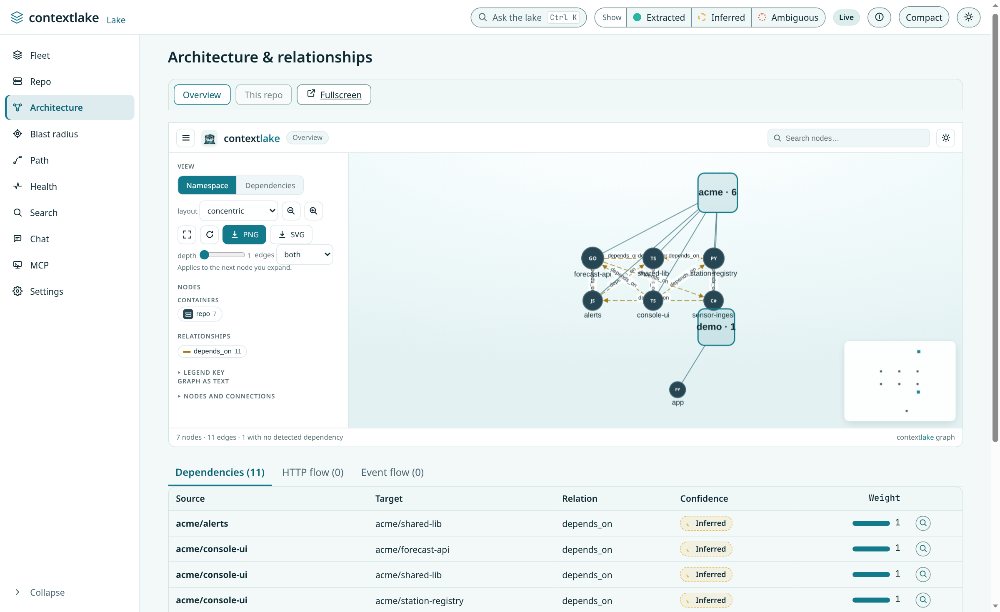
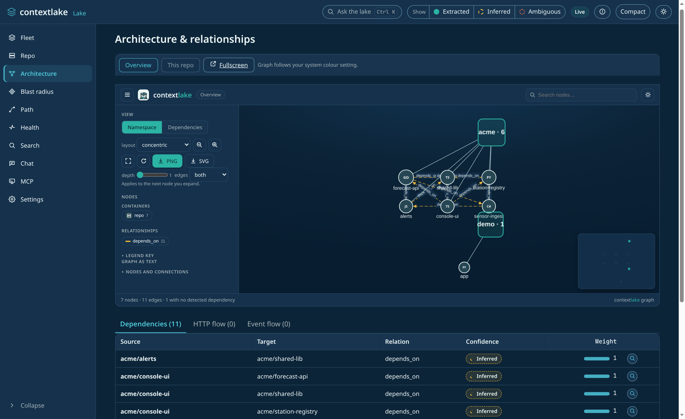
7. Change impact (blast radius)#
Pick a symbol (from search or a repo's symbol list) and see what a change would touch,
hop by hop, with the confidence of each path. A Call sequence card renders that same
neighborhood as a Mermaid sequence diagram (--format sequencediagram, §5) seeded by
the symbol you're on.
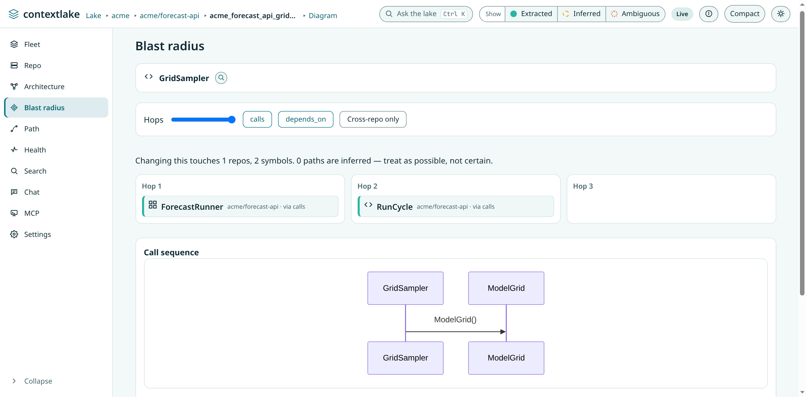
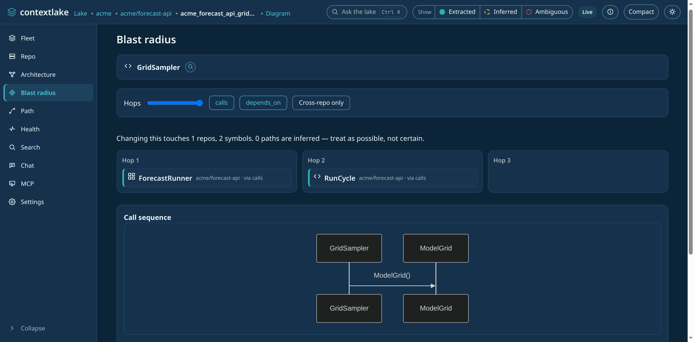
The breadcrumb keeps going: repo, symbol, Diagram, Wiki, Links, Ticket. Each is one click to that symbol's repo-scoped architecture graph, its curated wiki, or its connector links in Jira, Confluence or GitLab.
Wiki, Links and Ticket appear only when they apply. A missing wiki, link or ticket is left out of the trail, never shown as a dead crumb.
Ticket is not the same as the repo-level Links crumb. It is an issue attributed to this specific symbol, taken from its docstring or from the git-blame commit message on the line where it is defined. See Connectors. It is confirmed by live JQL, the same way a branch-derived key is. Clicking it opens the real tracker URL, not another dashboard view.
8. Path#
Sometimes the question is not "what does this touch" (§7) but "how does A reach B". That wants a single route, not a diagram.
The Path tab takes two symbol names, or node ids, and shows the shortest route as numbered steps.
Two cases it handles rather than guessing:
- An ambiguous name across repos. It lists the candidates and asks you to narrow. A node id, or a name unique to one repo, resolves straight through.
- No route within the hop limit. It says so plainly, instead of showing an empty diagram.
8b. Search#
Search is a lens in its own right, not only the box that feeds the other tabs.
- Two modes: Symbols and Semantic.
- A scope toggle, flipping between the whole fleet and the repo you were last looking at.
- Each result row shows the symbol's kind, its qualified name and its repo.
- Clicking a row opens that repo's anatomy tab.
- Each row has its own Blast button, so you can go from a search hit straight to its blast radius.
Semantic mode is live-only: in a --site export it says so and points you at the running
server. On a live server with no embedder wired up it does not fail either: it returns lexical
matches and labels them as such, saying semantic is unavailable, so a result set never claims to be
something it is not.
8c. Health#
The Health rail item is the dashboard's view of the same audit contextlake kb lint performs.
Four stat tiles (Checked, Stale repos, Unreadable, Dangling edges), and then, only
when something is wrong, the detail:
- Stale repos, whose HEAD moved since indexing. Each row links to the repo and shows the fix,
contextlake kb index. - Unreadable repos, whose checkout is gone. A separate tile from stale on purpose, because re-indexing does not fix it; re-clone it or drop it from the store.
- Dangling edges, a sample table of edges whose target node no longer exists.
A clean store gets a single "Clear water" panel instead of empty tables. Unlike most of the
dashboard, Health is in a --site export too, so a shared snapshot carries the same verdict the
live server would have given at export time.
9. Generate a wiki#
No wiki for a repo yet? What the Wiki tab offers depends on whether the server can write:
- Started with
--allow-mutations, the tab carries a Generate wiki card that runs the CLI for you. See §11. - Started without it, the tab hands you the exact command instead (one click to copy). A button that only copies text is the honest control for a server that cannot run anything.
contextlake kb wiki acme/forecast-api --llm builtin
--llm turns on the LLM tier inline. Three choices:
builtinruns a small CPU model, with no Ollama and no API key. On apipinstall it needscontextlake doctor --fix llm-localfirst. See Installing and upgrading.ollamaneeds no compiler at all.openaiuses that backend instead.
A positional repo id limits generation to that one repo.
Once generated, the page renders straight in the Wiki tab. No click-through. It is grounded in the repo's real symbols, and in its README and conventional config files when those exist.
Sections follow a fixed order: Overview, Setup & Run, Architecture, Dependencies, Gotchas, Decisions. A section with nothing to ground it is left out, never written empty. When connected sources have real data to cite, an attributed "external context" block is added. A provenance footer names the exact commit and source files.
A STALE badge appears beside the heading whenever the indexed commit has moved since the page was written. It is always visible, not hidden behind anything.
The page below is the model-free page, written with no --llm. Its sections come from the
graph alone. Add --llm and the same tab shows the prose sections listed above.


Large, federated repos (see generate-wiki.md → Per-subsystem pages)
get one additional wiki page per qualifying subsystem alongside the whole-repo overview. When any
exist, a "Subsystem:" dropdown appears above the wiki content, pick one to swap in that
subsystem's own page, or the Whole repo option to go back, without leaving the tab. The dropdown
only ever lists subsystems that actually have a generated page on disk, so it never offers an
option that would 404. Live-only, like MCP console/Settings above (no --site export).
A subsystem pane says the same thing in words: wiki pages are generated per repo, not
per subsystem, and the card below it covers the whole repo. There is no module-scoped
run, because contextlake kb wiki takes a repo.
With --allow-mutations, the Wiki tab (single-repo) and Settings tab (fleet-wide) also
carry a Regenerate button, see §11.
See Generate the wiki.
9b. Generate the documents#
The Docs tab holds the two generated documents for a repo, the API reference and the design notes. It works the same way the Wiki tab does:
- With
--allow-mutations, the tab carries a card that runscontextlake kb docsfor this repo. It reads Generate documents when neither document is on disk and Regenerate documents when one is, so the heading, the button and the confirm dialog all say the same thing. - Without mutations, the tab hands you
contextlake kb docsto copy.
The card shows the run's log while it runs, then a count of the documents written. That count is read back from the files on disk, because an exit code says a process ended, not what it produced.
Live-only: a --site export carries no generated documents, so it does not offer the
tab at all.
10. MCP console and settings#
Two read-only panels, live-only (not part of a --site export; both describe this
machine/process, not the graph itself):
MCP: the live tool catalog for contextlake kb serve against this store (introspected
from the real server, so it can never drift from what's actually exposed), plus a
copyable .mcp.json / .vscode/mcp.json snippet for wiring an editor to it.
Settings: the active kb.toml at a glance: store path/size/schema version, the
mirror root, configured connectors, and the embedder/LLM tiers. No in-browser editing:
it's a summary, not a form; edit kb.toml directly to change anything.
11. Mutating routes#
Everything above is read-only.
contextlake kb dashboard --serve --allow-mutations adds five write actions. Each one asks you
to confirm in the browser first.
| Action | Where | What it does |
|---|---|---|
| Sync now | a repo page | git pull --ff-only, then reindex |
| Add repo | fleet overview | clone a URL into --workspace, then index it |
| Start / Stop / Restart | MCP console tab | manages a separate contextlake kb serve --transport http process |
| Regenerate | a repo's Wiki tab, or Settings | runs the real contextlake kb wiki CLI in the background |
| Generate / Regenerate documents | a repo's Docs tab | runs the real contextlake kb docs CLI in the background for that repo |
Two notes on those:
- The MCP process is not the stdio server your editor spawns. This dashboard cannot see or manage that one. Its bearer token is covered below.
- Regenerate and Generate documents both run detached from the request that started them, so they keep going if you close the browser tab.
- Generate documents has no estimate step and no Force box. The run is model-free by default,
so there is no token cost to preview first, and
kb docshas no--forceflag to offer.
Regenerate always shows a real count before you confirm: "N of M repos will regenerate, the rest are already up to date". A Force checkbox skips that freshness check and regenerates everything in scope regardless (the estimate updates to reflect that before you confirm, too, a fleet-wide Force run can mean an LLM call per indexed repo).
The MCP server this card starts is authenticated. Its HTTP transport needs
Authorization: Bearer <token> on every request. See
Authenticating the network transports.
The dashboard spawns that server with its output discarded, so the server cannot print a token where you would see it. The dashboard mints the token itself and shows it on the card, next to the endpoint. That card is the only place it appears.
Two things follow:
- Restart mints a new token. Any client pinned to the old one has to be re-pointed at the value the card then shows.
- The token lives in
<store>/dashboard/mcp-server.pid, created0600, so it survives a page reload.
Mutating routes are refused in two cases:
- With
--sample. The demo fleet is fictional, so there is nothing on disk to sync or clone. - With any non-loopback
--host. Only127.0.0.1,localhostand::1count as loopback. Mutating routes are loopback-only by design.
Two checks protect every POST:
- A per-launch token. A random token is minted at startup and wired into the served page.
Every
POSTmust send it in anX-Contextlake-Tokenheader, matching exactly. This closes the case where any open browser tab submits a form-encoded POST at your local server. - A
Hostheader check. The request must name this host and port. This closes DNS rebinding, where a hostile site resolves a name to127.0.0.1to reach past the loopback bind.
A mutation holds the store's single-writer lock only while it runs. A concurrent CLI command
gets a clean 409 rather than an interleaved write.
The MCP server those Start/Restart actions spawn is constrained to a loopback bind and an unprivileged port (1024-65535), whatever the request asks for. That transport has no authentication of its own, so a caller-chosen bind would let one token turn this loopback-only dashboard into a public graph server that outlives it.
The Host check applies to every request. That includes GET, and every route, static
assets included. Two reasons: the read API is your whole code graph, and the served
dashboard.js carries the per-launch token. The same rule guards
contextlake kb graph --serve.
What this means in practice: a request is answered only when its Host is the address you bound
with --host, or localhost, each with the port.
So if you bind a wildcard (--host 0.0.0.0) and then browse the machine's LAN address, you get
403 forbidden. Two ways round it:
- bind that address directly,
--host 192.0.2.10 - or reach it as
http://localhost:PORT
12. Chat#
Ask a question about the fleet in plain language -- "who calls X", "what depends on Y", "explain repo Z". Two layers, always shown together:
- Free graph router (always on). The same deterministic
askclassifiercontextlake kb serveexposes over MCP: it routes the question to the matching graph tool (find_definition,find_callers,blast_radius,who_knows,get_wiki, semantic search, ...) and returns a structured, cited result. No LLM call, no cost, works with zero extra setup. - LLM prose (opt-in,
--llm-chat). Layers a short written answer on top of that same structured result, using whatever[llm]providerkb.tomlalready has configured (the same settingcontextlake kb wikiuses). The structured citations the prose was grounded in are always shown alongside it (expand "Graph data this answer is grounded in") so you can verify it, not just trust it. If the LLM call fails for any reason, chat falls back to the free result rather than erroring out.
If a question fails outright (a network hiccup, the server restarting mid-request, and so on), that turn shows a Retry button instead of leaving you to retype it, it resends the same question in place.
--llm-chat is opt-in at server start, never toggled per-question: it mints the same
per-launch token --allow-mutations uses (§11), and every chat request while it's on
must carry that token -- a page other than this dashboard can't silently trigger a
paid call. The free layer needs no token, same risk level as any other read-only
/api/* route. Live-only, like MCP console/Settings above (no --site export).
Loopback host only, for the same reason --allow-mutations is (§11): that token is
served inside /dashboard.js, so on a non-loopback bind anyone who can reach the port
can read it and spend your provider budget. --llm-chat --host 0.0.0.0 is refused at
startup.
Everything here runs entirely on your machine, and is read-only unless you opt into
--allow-mutations (§11) or --llm-chat (§12, which sends questions to your
configured [llm] provider -- everything else stays local).